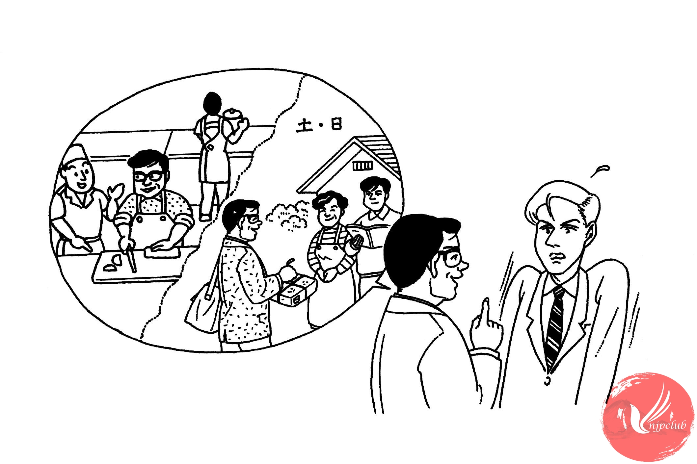

料理を 習おうと 思って います

|
小川： |
来月から 独身です。 |
| ミラー： |
えっ？ |
| 小川： |
実は 大阪の 本社に 転勤なんです。 |
| ミラー： |
本社ですか。それは おめでとう ございます。でも、どうして 独身に なるんですか。 |
| 小川： |
妻と 子どもは 東京に 残るんです。 |
| ミラー： |
えっ、いっしょに 行かないんですか。 |
| 小川： |
ええ。息子は 来年 大学の 入学試験が あるから、東京に残るというし、 妻も今の 会社を やめたくないと 言うんです。 |
| ミラー： |
それで、別々に 住むんですか。 |
| 小川： |
ええ、でも、月に 2、3回 週末に 帰る つもりです。 |
| ミラー： |
大変ですね。 |
| 小川： |
でも、いい チャンスですから、料理を 習おうと 思って います。 |
| ミラー： |
それは いいですね。 |